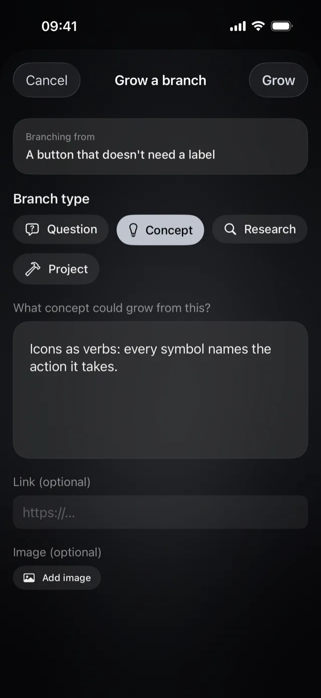
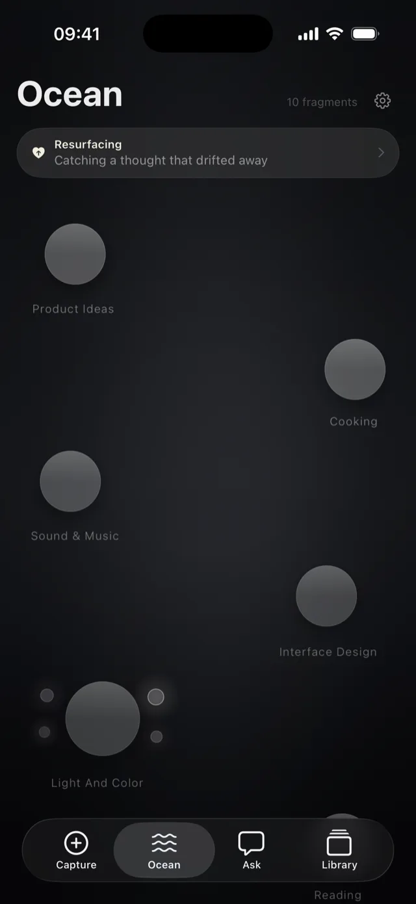
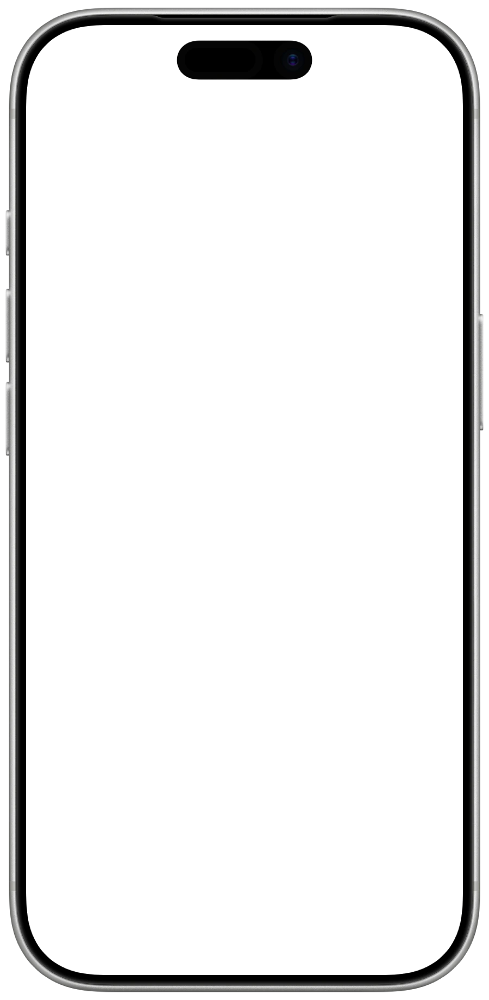
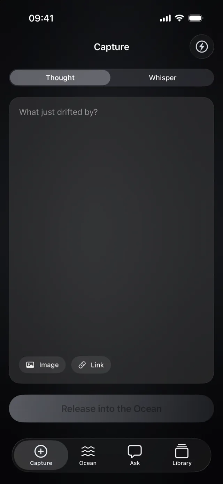
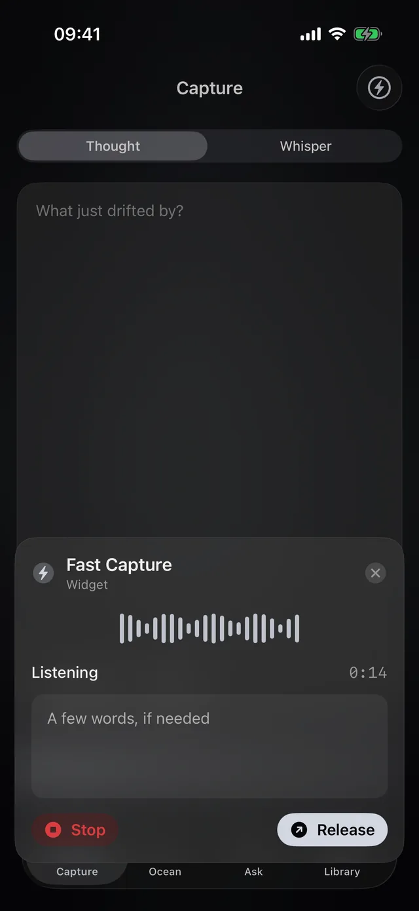
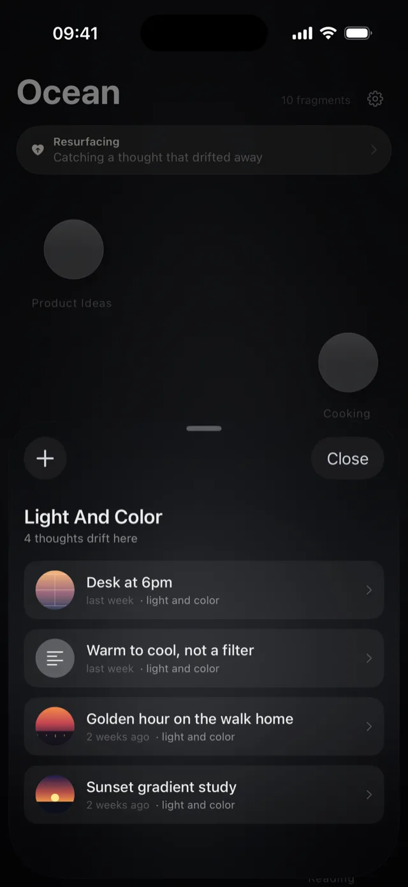
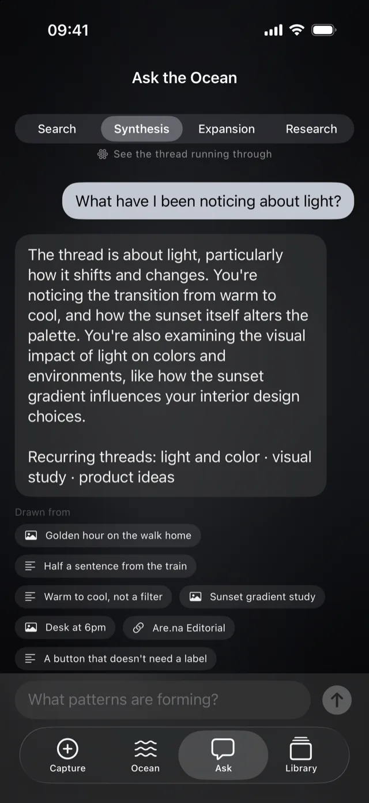
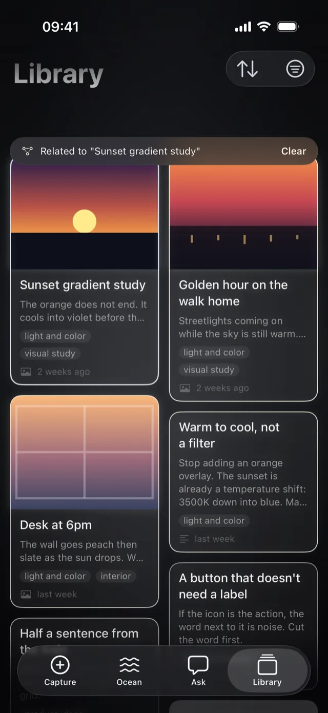
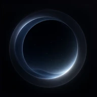

延展
延展一个想法，不丢失原来的它。
把任何灵感延展为问题、概念、研究或项目。原始内容会完全保持你写下的样子。

适用于 iPhone 与 iPad
Oryne 是安放灵感、语音、截图与链接的宁静之所。相关的灵感会自行汇聚，被遗忘的灵感会在需要时再次浮现。


捕捉
说出来、打出来、拍下来，或者分享过来。Oryne 原样接住每一条灵感，从不要求你先归档。
把操作按钮或控制中心按钮设为「快速捕捉」。Oryne 一打开就在聆听。
说话的同时，文字就会出现。如果你的 iPhone 设置了两种语言，Oryne 会同时聆听这两种语言。
「截图 + 语音」会把屏幕上的内容和你的语音备注一起留存。
通过共享表单把链接、图片和文字发送到 Oryne。链接会带着标题和预览一起到来。
在「快捷指令」中使用 Oryne 的「记录灵感」操作，无需打开 App 就能留住灵感，也可以用 Siri 运行它。

快速捕捉
把操作按钮设为「快速捕捉」，Oryne 会从 iPhone 的任何地方直接打开并开始录音。不用去找 App，不用一层层点进去。说出来，然后回到你正在做的事。
「设置」›「操作按钮」›「快捷指令」›「开始快速捕捉」。从此按一下，就开始捕捉。
把 Oryne 的「快速捕捉」按钮加入控制中心，在任何界面都是同样的一下。
由你决定打开的是哪一种。语音会在出现的那一刻开始录音，输入则直接带着键盘出现。
停下之后，Oryne 会把你的文字显示三秒，然后汇入海洋。想先改一改，轻点文字就好。
「快速捕捉」小组件，轻点一下就开始。

洋流
Oryne 理解每条灵感在说什么，并把相关的灵感汇成洋流。你不必建文件夹、选标签，也不必决定它该放在哪里。
一张日落照片和一条关于暖光的笔记会汇到一起，即使它们没有一个相同的词。
想法本就彼此交叠，所以一条灵感可以同时属于多条洋流。文件夹做不到这一点。
每条灵感都会在你的设备上得到一个简短的标题。改了它，它就一直是你的。

再次浮现
每天，都会有一条你许久未见的灵感浮上水面。它不是提醒，也不是任务，只是一个好念头，重新回到眼前。
「再次浮现」小组件会在主屏幕或锁定屏幕上显示当天的那条灵感。
与你最近的灵感同属一条洋流的旧灵感，会更容易浮现。
刚刚重温过的灵感会先歇一阵，之后才可能再次浮现。
提问
Oryne 从你捕捉过的灵感中作答，并标明用到了哪些，让每个回答都能追溯到你自己的文字。
找到那条你只记得一半的灵感。
看清一堆笔记加起来意味着什么。
把一个想法带去新的地方。
看向笔记之外，并明确标为「海洋之外」。
回答在你的设备上生成，在支持的机型上使用 Apple 智能。

延展
把任何灵感延展为问题、概念、研究或项目。原始内容会完全保持你写下的样子。

库
搜索每一条灵感，按类型筛选，还可以按时间或相关性浏览。

使用场景
在公交上截下一组配色，说说是什么打动了你。你的色彩研究会汇成一条洋流，项目开始时随时可用。
图片
日落渐变研究
橙色并没有结束，它在地平线吞没它之前，冷却成了紫色。
光与色
灵感
由暖到冷，而非滤镜
别再叠一层橙色了。日落本身就是色温的变化：从 3500K 降到蓝色。去匹配它，而不是伪造它。
光与色
图片
傍晚 6 点的书桌
太阳落下时，墙面先变成桃色，再变成石板灰。选 App 背景前值得取个样。
光与色
火车上的半句话，咖啡馆里偶然听到的一句。Oryne 帮你留着这些碎片，直到它们长成段落。
语音
房子留着夏天的气味
开头一句？我们关上房子很久以后，它还留着夏天的气味。
写作
灵感
咖啡馆里听到的
「我只在小事上撒谎。」这是人物，不是台词。
写作
凌晨两点的产品点子，值得留着的链接，客户随口说的一句话。之后问问自己：我一直在绕着什么打转？
灵感
火车上的半句话
如果主屏幕只是一条灵感，而不是一格格的网格呢。
产品灵感
灵感
不需要文字的按钮
如果图标本身就是动作，旁边的文字就是噪音。先删掉文字。
界面设计
链接
Apple 设计原则
developer.apple.com
让界面始终像是属于这台手机的设计指南。
用户体验
引文、文章和问题。把任何一条延展为研究，再问问你的资料有什么共同点。
链接
Are.na Editorial
are.na
关于注意力、收藏与慢软件的笔记。保存不等于看见。
阅读
研究
什么让一个收藏变得有用？
延展自 Are.na Editorial
看看最好的收藏舍弃了什么。
阅读
菜谱、礼物点子、想去的地方。那些不记下来就会丢掉的小事。
灵感
工作日晚上的拌面
辣椒油、蒜、剩下的青菜。十分钟。别丢了这条。
烹饪
灵感
给爸爸修好那台旧收音机
他还常说起老厨房里的那台。找个会修电子管收音机的人。
礼物
图片
车站旁的那家饺子馆
猪肉韭菜馅，七点门口就排起长队。工作日去。
地方
笔记应用帮你把事情记下来。Oryne 让灵感一直活着。
| 一般的笔记应用 | Oryne | |
|---|---|---|
| 记下一个想法 | 打开 App，新建笔记，起个名字，选个文件夹。 | 按一下按钮，开口就说。 |
| 保持有序 | 永远得靠你自己。 | 相关的灵感会自己汇聚。 |
| 旧的想法 | 沉到看不见的地方。 | 每天回来一条。 |
| 找东西 | 得猜对关键词。 | 用你自己的话提问，并看到出处。 |
| 发展一个想法 | 直接在原稿上改。 | 延展它，原稿保持不变。 |
隐私
Oryne 的设计让你的灵感无需离开你的设备，也无需创建任何账户。
标题、主题、洋流与回答，都在你的 iPhone 或 iPad 上完成。
你的海洋通过你的私人 iCloud 在设备之间同步。
App 里没有，这个网站上也没有。
把整片海洋导出为 Markdown 文件，带着它去任何地方。
运行 iOS 18 或更高版本的 iPhone，以及运行 iPadOS 18 或更高版本的 iPad。由 Apple 智能生成的回答需要受支持的机型。
不需要。Oryne 通过你的 iCloud 同步，不用 iCloud 也能完整使用。
在你的设备上；如果你使用 iCloud，也会存在你的私人 iCloud 中。我们看不到它们。
可以。捕捉、洋流、再次浮现和提问都无需联网。链接预览需要联网；对于设备无法独立转写的语言，语音转写也需要联网。
可以。Oryne 支持 English 与简体中文。在「设置」›「Oryne」›「语言」中选择。
可以。在 Oryne 的设置中选择「导出海洋」，所有内容都会保存为 Markdown 文件，每条洋流一个，并附带一份 JSON 备份。

下一个灵感正在路上。准备好接住它。